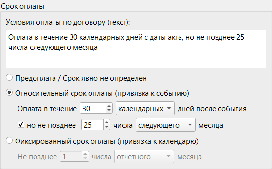
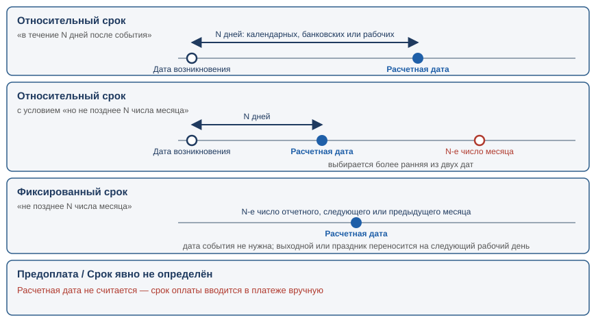

Раздел 7. Сроки оплаты по договору |
Условие договора («в течение 10 рабочих дней после получения счёта», «не позднее 25 числа следующего месяца»), записанное в документ договора (раздел 6), программа переводит в дату и предлагает её как срок оплаты платежа.
Где задаются условия |
Условия хранятся в документе (рис. 20 в разделе 6), в группе «Срок оплаты»: текст «Условия оплаты по договору» — напоминание для вас, на расчёт не влияет; расчёт определяют тип срока оплаты и его поля.

Рис. 23. Группа «Срок оплаты» в окне документа. Выбран относительный срок: 30 календарных дней после события, но не позднее 25 числа следующего месяца.
Три типа срока |
| Тип в окне документа | Как читается условие | Что нужно задать |
|---|---|---|
| «Предоплата / Срок явно не определён» | Срока в договоре нет, или он не связан с датами (например, оплата заранее) | Ничего |
| «Относительный срок оплаты (привязка к событию)» | «Оплата в течение N дней после события» и, при желании, «но не позднее N числа месяца» | Число дней, какие это дни (календарные, банковские или рабочие), а для ограничения — число и месяц |
| «Фиксированный срок оплаты (привязка к календарю)» | «Не позднее N числа месяца» | Число и месяц |
Расчетная дата не считается («—»): срок вводится в платеже вручную. Этот тип стоит у нового документа по умолчанию.
Срок отсчитывается от события (выставления счёта, подписания акта); его дата — «Дата возникновения», указывается в платеже. Условие в окне документа читается как предложение:
|
Оплата в течение [10] [рабочих] дней после события, но не позднее [25] числа [следующего] месяца |
Вторая часть («но не позднее …») необязательна и включается флажком.
При включённом «но не позднее …» выбирается более ранняя из двух дат: «30 дней, но не позднее 25 числа следующего месяца» — что наступит раньше.
Срок не зависит от события, это число месяца:
|
Не позднее [15] числа [следующего] месяца |

Рис. 24. Как программа получает расчетную дату. У относительного срока она отсчитывается от даты возникновения, у фиксированного привязана к числу месяца, у предоплаты не считается.
Что нужно программе для расчёта |
Кроме условий документа, нужны две даты (панель договора, рис. 22 в разделе 6):
| Что | Нужно для | Откуда берётся |
|---|---|---|
| Дата возникновения | относительного срока: от неё отсчитываются дни | Из платежа; в панели можно задать отдельно |
| Отчетный месяц (месяц и год) | фиксированного срока и ограничения «но не позднее …»: от него считаются слова «текущий», «следующий», «предыдущий» | Сначала текущий месяц; от дат платежа не зависит |
Отчетный месяц зависит от сути договора, поэтому программа его не определяет: стоит текущий месяц. Если нужен другой, выберите его (и год): расчетная дата пересчитается.
Пример. Сегодня 12.11.2026, вносится акт за октябрь, условие «Не позднее 15 числа следующего месяца». Нужно выбрать «Октябрь»: срок — 16.11 (15.11 — воскресенье). Если оставить «Ноябрь», получится 15.12.2026.
Как программа считает дату |
От даты возникновения отсчитывается число дней; при «но не позднее …» берётся более ранняя из двух дат (ограничение считается по правилам фиксированного срока). Виды дней:
| Вид дней | Как считаются | Если результат выпал на нерабочий день |
|---|---|---|
| «календарных» | Все дни подряд, включая выходные | Срок переносится на ближайший следующий рабочий день |
| «рабочих» | Считаются только рабочие дни; день возникновения не считается — первым днём будет следующий рабочий | Не бывает: результат всегда рабочий день |
| «банковских» | Считаются только дни, в которые работает банк; день возникновения не считается | Не бывает: результат всегда банковский день |
Рабочие и банковские дни различаются, только если в календаре отмечены особые дни (ниже); по умолчанию это дни с понедельника по пятницу.
|
⚠️ Внимание. Перенос всегда идёт вперёд, а не назад на пятницу (правило Гражданского кодекса Республики Беларусь): при «не позднее 15 числа» и воскресенье 15-го срок — понедельник 16-го. |
Примеры |
В примерах выходные — суббота и воскресенье, праздников нет.
| Условие в документе | Дата возникновения | Отчетный месяц | Расчетная дата | Пояснение |
|---|---|---|---|---|
| 10 календарных дней | 20.10.2026 (Вт) | — | 30.10.2026 (Пт) | 20.10 + 10 дней — рабочий день, переносить не нужно |
| 10 календарных дней | 14.10.2026 (Ср) | — | 26.10.2026 (Пн) | 14.10 + 10 дней = 24.10 (суббота), срок переносится на понедельник |
| 10 рабочих дней | 14.10.2026 (Ср) | — | 28.10.2026 (Ср) | Считаются только будни: 15.10 — первый день, 28.10 — десятый |
| 30 календарных дней, но не позднее 25 числа следующего месяца | 14.10.2026 (Ср) | Октябрь 2026 | 13.11.2026 (Пт) | 14.10 + 30 дней = 13.11, это раньше, чем 25.11, поэтому выбирается 13.11 |
| 30 календарных дней, но не позднее 25 числа следующего месяца | 30.10.2026 (Пт) | Октябрь 2026 | 25.11.2026 (Ср) | 30.10 + 30 дней = 29.11 (воскресенье) → 30.11. Это позже, чем 25.11, поэтому выбирается ограничение |
| Не позднее 15 числа текущего месяца | — | Октябрь 2026 | 15.10.2026 (Чт) | Рабочий день, перенос не нужен |
| Не позднее 15 числа следующего месяца | — | Октябрь 2026 | 16.11.2026 (Пн) | 15.11 — воскресенье, срок переносится на понедельник |
| Не позднее 31 числа текущего месяца | — | Ноябрь 2026 | 30.11.2026 (Пн) | В ноябре 30 дней, берётся последний день |
| Не позднее 10 числа предыдущего месяца | — | Октябрь 2026 | 10.09.2026 (Чт) | Отчетный месяц минус один — сентябрь |
Календарь рабочих и праздничных дней |
Праздники и переносы выходных вносятся в «Настройки» → «Календарь» (по годам) тремя списками:
| Список | Что в него вносить | Как это влияет на расчёт |
|---|---|---|
| «Праздничные» | Нерабочие будни | Не считаются ни рабочим, ни банковским днём |
| «Рабочие банковские» | Выходные, в которые работают и организации, и банки | Считаются и рабочим, и банковским днём |
| «Рабочие небанковские» | Выходные, в которые работают организации, но не банки | Считаются рабочим днём, но не банковским |
Внесённые дни влияют и на перенос календарных дней и фиксированных сроков. Пример: 24.10.2026 (суббота) внесена в «Рабочие небанковские»; тогда «10 рабочих дней» от 14.10.2026 закончатся 27.10, а «10 банковских дней» — 28.10.
|
⚠️ Внимание. Праздников и переносов программа не знает: пока они не внесены, все будни рабочие, а суббота и воскресенье выходные. Внесите их на нужный год заранее, иначе расчетная дата может выпасть на нерабочий день или сдвинуться. |
Используется календарь года, на который попала дата: при переходе через Новый год нужны оба года.
Где вы увидите расчёт |
В панели договора окна платежа: «Расчетная дата:» или «—». Пересчитывается при смене даты возникновения или отчетного месяца; в платеж переносится кнопкой «← Подставить срок оплаты» (раздел 6).
В окне «Копирование платежа с новым основанием» срок подставляется автоматически (подсказки у поля — в разделе 3).
Уже созданные платежи не пересчитываются. Изменение условий в документе не меняет срок созданных платежей; новая дата появится в новых платежах или после повторного «← Подставить срок оплаты».
Если расчетная дата не подходит |
Проверьте по порядку:
Иначе введите срок вручную: принимается любая дата. Если условие нельзя описать (например, «через 3 дня после поставки, но не ранее 1 числа»), выберите «Предоплата / Срок явно не определён» и впишите условие в текстовое поле как напоминание.
Если что-то пошло не так |
| Что вы видите | Что случилось | Что делать |
|---|---|---|
| В «Расчетная дата» стоит «—» | Тип документа «Предоплата / Срок явно не определён» | Введите срок оплаты вручную или смените тип срока в документе |
| Кнопка «← Подставить срок оплаты» неактивна | Платеж не привязан к документу, выбранному в панели (в том числе выбран другой документ), или расчетной даты нет | Выберите документ платежа или привяжите платеж к выбранному (раздел 6); проверьте тип срока |
| Расчетная дата сдвинута на месяц | Отчетный месяц стоит не тот (по умолчанию он равен сегодняшнему) | Выберите нужный месяц и год в блоке «Отчетный месяц» |
| Расчетная дата выпала на праздник или не учла перенесённый рабочий день | Праздник или перенос не внесены в календарь | Внесите их в «Настройки» → «Календарь» |
| Не видно полей «Дата возникновения» или «Отчетный месяц» в панели | Эти поля показываются только когда они нужны для условий выбранного документа | Проверьте тип срока в документе |
| «Дата возникновения не может быть больше срока оплаты» при сохранении платежа | Дата возникновения позже срока оплаты | Исправьте одну из дат |